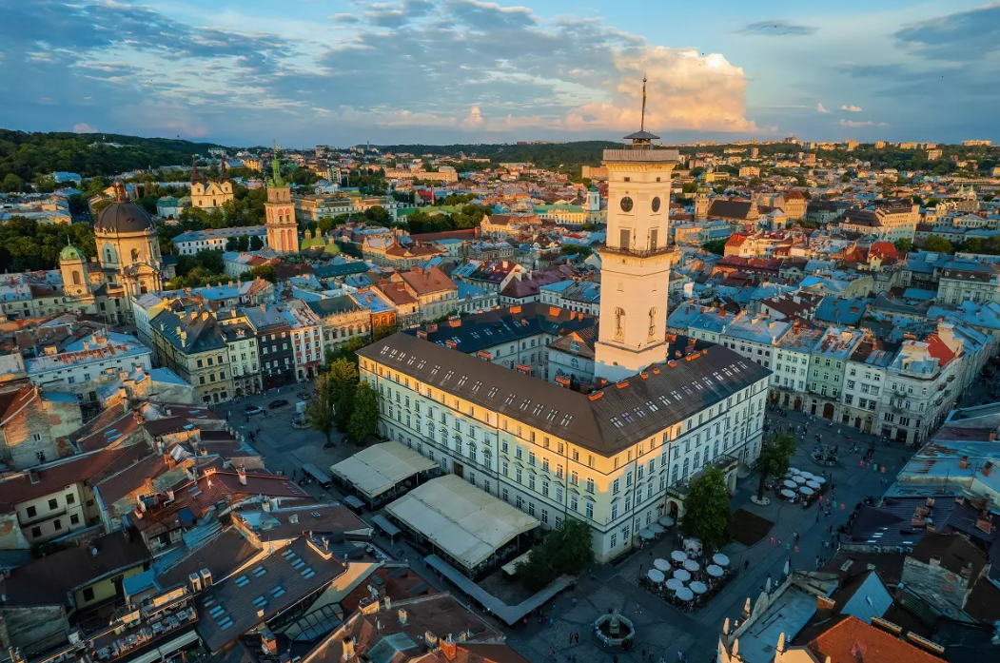

Місце народження: 19 листопада, 2004 року, смт. Люблинець, Ковельський район, Волинська область.
Освіта: ОНЗ «Люблинецький ліцей»; Національний технічний університет України "Київський політехнічний інститут ім. Ігоря Сікорського", м. Київ.
Львів - це одне з найкрасивіших міст України, відомий своєю архітектурною спадщиною та культурною багатогранністю. Місто засноване у середньовіччі і має вражаючий історичний центр, включаючи величні церкви, старовинні будівлі і вузькі вулички, які переносять вас у часи минулого.
Львів також славиться своєю неперевершеною кавовою культурою, численними кафе та ресторанами, де можна скуштувати традиційні українські страви. Місто є домівкою для безлічі культурних подій, фестивалів і музеїв, що робить його важливим культурним центром України.
Не менш важливим є і природний аспект Львова, з його зеленими парками та площами, що створюють затишну атмосферу для мешканців і туристів.
